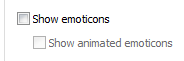

-1. A regra -1 não existe porque não faz sentido haver uma regra -1; 1. hmm; 2. Você não viu nada; Y. Não precisa fazer sentido. Se faz sentido, está no lugar errado; Y. Se ainda assim fizer sentido, foi um acidente; 4. Tentar desequilibrar o mundo é divertido; 5. Lolis; 6. A culpa é sempre sua; 7. Nada de linguagem de imageboards, por favor. Crie suas próprias palavras; 8. Planos maléficos são sempre secretos; 9. É O número; 9. Não, sério. É O número mesmo; 9. FODASSE, eu sou capaz de ser um génio... 9. é o melhor número do alfabeto; 9. PORRA. DO YOU GET IT YET? 10. Eu devo ser algum tipo de padrão, o gangbanger anónimo do século 21; 11. Saidinho de Compton, um fudedor de mães doido chamado Cubo de Gelo; 12. Hey, you, watcha gonna do, hey, you watcha gonna do; 13. Não; 14. devia ser PELO MENOS a idade legal; 15. Você deve tratar os membros da Padaria com mais respeito do que trata a sua mãe; 16. Você deve ficar mais ofendido se ofenderem um membro da Padaria do que se ofendessem a sua mãe; 17. POR QUE A SUA MÃE... 18. O Gabe Newell é boa pessoa mas isso não o torna menos gordo; 19. Se você pedir com jeitinho, o Telurius explica; 20. 21. Trair a Padaria é mais grave do que ser um neo-nazi necrófilo; 22. A pena que se aplica a traidores é o ostracismo seguido de excomungação; 23. O português faz pão, a janela é muito belíssima; 24. Se não for o C••• será sempre outro; 25. Vagina não mistura com poop. Aprendemos isso em anatomia; 24. Os boias são nossos amigos; 24. Os turrets são nossos amigos, desde que estejam hackeados; 25. No que toca a personalidade, 2D > 3D, lemniscate; 25. Não podemos tocar o 2D, mas o 2D pode tocar nossos corações (eventualmente com tentáculos); 25. 2D inabilita todas as regras e morais do mundo real; 26. 2.5D não existe, vão se foder; 27. Você ou tu, gerundio ou 1º pessoa, tanto faz; 28. Embora eu faça o que ame, embora eu ame o que faça; O meu som não é só love, o meu som não é só desgraça; 29. Quem és tu, Zazu? 30. Todos os portugueses na internet são o Telurius disfarçado; 31. A filosofia liferuler que a juventude segue hoje em dia é o cancro que destroi a humanidade; 32. Não se remexe as calcinhas dos membros da Padaria com ódio; 33. Tolerância faz o mundo andar à roda; 34. NSFW; 35. Emoticon gay; 35.  << ISSO É UMA REGRA. SKYPE E MICROSOFT FILHOS DA PUTA. 35. Todos devem chorar pela morte do :3 36. Um membro da Padaria não pode ser destruído por efeitos, cartas mágicas ou armadilhas - apenas por ataque normal; 37. é um número aleatório. Não insista. 38. Vamos fazer X? 38. Assume-se que X é algo possível e relevante. 38. VAI À MERDA, LATA SURDA.